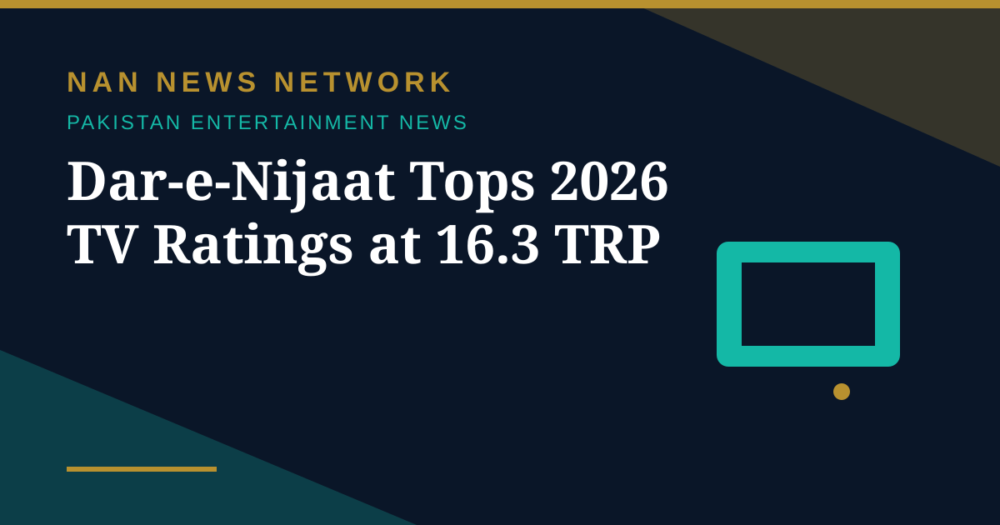

Dar-e-Nijaat Tops 2026 TV Ratings at 16.3 TRP

Pakistani television's ratings race has a fresh talking point, and this time, Durefishan Saleem and Sheheryar Munawar are in the spotlight. Their ongoing drama, Dar-e-Nijaat, has recorded an impressive figure in its latest promotional update, giving its leading man a reason to celebrate. A ratings poster shared on Sheheryar's Instagram Story puts the drama at 16.3 TRPs, with the accompanying text describing it as the highest rating achieved by any drama in 2026.
The drama behind the number
Written by Umera Ahmed and directed by Saqib Khan, Dar-e-Nijaat brings together Durefishan and Sheheryar in a story centred on heartbreak, destiny and redemption. Its ensemble also includes Nameer Nawaz Khan, Sahar Hashmi, Romaisa Khan, Sania Saeed and Saba Hamid. The drama had already drawn attention for Sheheryar's portrayal of Abu Bakar: actress Zara Noor Abbas previously praised his Quranic recitation in a scene and also appreciated Romaisa Khan's performance as Hamna. The actor reshared the ratings announcement with "Alhumdulillah" and a folded-hands emoji, and the update prompted social media comparisons with Zanjeerain, with the circulating post claiming that Dar-e-Nijaat has moved ahead.
An honest caveat about the comparison
Here, honesty matters more than hype. The promotional image does not provide Zanjeerain's corresponding figure, nor does it specify the audience category and measurement period for the comparison. So while the 16.3 TRP figure itself comes from the drama's own promotional poster, shared by its lead actor, the claim that it "overtakes" Zanjeerain rests on the promotional post alone — the source did not publish the rival figure that would let readers check the comparison for themselves. Readers should treat the top-spot claim as a promotional claim, not an independently verified ratings ranking, until a ratings agency figure for both dramas over the same period is published.
Where and when to watch
Dar-e-Nijaat airs on ARY Digital every Friday and Saturday at 8 pm Pakistan time, with episodes also available to stream through the ARY Plus app. With the latest ratings announcement adding to the interest around the show, the question now is whether it can keep that momentum going in the coming weeks. On the evidence of its social media buzz — and a lead pair whose chemistry has become the show's calling card — the audience, at least, seems in no hurry to switch off. That distinction — between a promotional poster figure and an independently audited ranking — is worth keeping in mind whenever a drama's ratings are celebrated online, since posters rarely publish the methodology behind the headline number.
Sources: The Siasat Daily, October 2026; ARY Digital.